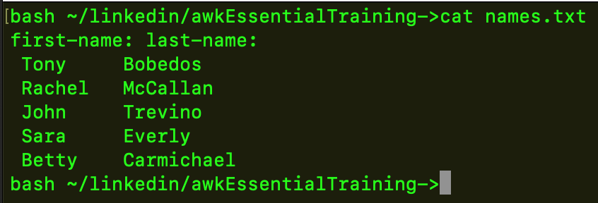
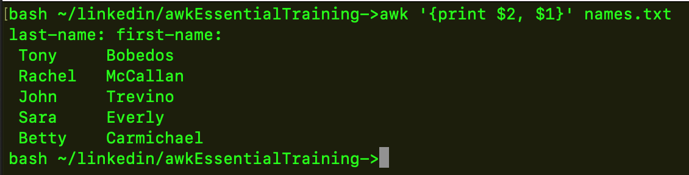

my names text files includes first-name lastname on the first line, then names with different amount of spaces between each first name and last name. No matter what I do, the awk script only acts on the first record/line
I thought maybe it's becuase of the z shell, so I switched to bash but that's not it
 
When the first line has a : it does not work